PRELIMINARIES
The only prerequisites for understanding this book are a knowledge of a few of the properties of the real numbers and a reasonable endowment of that invaluable quality, mathematical maturity. All of the definitions and basic theorems which are assumed later are collected in this first chapter. The treatment is reasonably self-contained, but, especially in the discussion of the number system, a good many details are omitted. The most profound results of the chapter are theorems of set theory, of which a systematic treatment is given in the appendix. Because the chapter is intended primarily for reference it is suggested that the reader review the first two sections and then turn to chapter one, using the remainder of the chapter if need arises. Many of the definitions are repeated when they first occur in the course of the work.
SETS
We shall be concerned with sets and with members of sets. “Set,” “class,” “family,” “collection,” and “aggregate” are synonymous,* and the symbol ε denotes membership. Thus x ε A if and only if x is a member (an element, a point) of A. Two sets are identical iff they have the same members, and equality is always used to mean identity. Consequently, A = B if and only if, for each x, x ε A when and only when x ε B.
Sets will be formed by means of braces, so that {x: … (proposition about x) …} is the set of all points x such that the proposition about x is correct. Schematically, y ε {x: … (proposition about x) …} if and only if the corresponding proposition about y is correct. For example, if A is a set, then y ε {x: x ε A} iff y ε A. Because sets having the same members are identical, A = {x: x ε A}, a pleasant if not astonishing fact. It is to be understood that in this scheme for constructing sets “x” is a dummy variable, in the sense that we may replace it by any other variable that does not occur in the proposition. Thus {x: x ε A} = {y: y ε A}, but {x: x ε A} ≠ {A: A ε A}.
There is a very useful rule about the construction of sets in this fashion. If sets are constructed from two different propositions by the use of the convention above, and if the two propositions are logically equivalent, then the constructed sets are identical. The rule may be justified by showing that the constructed sets have the same members. For example, if A and B are sets, then {x: x ε A or x ε B} = {x: x ε B or x ε A}, because y belongs to the first iff ε A or y ε B, and this is the case iff y ε B or y ε A, which is correct iff y is a member of the second set. All of the theorems of the next section are proved in precisely this way.
SUBSETS AND COMPLEMENTS; UNION AND INTERSECTION
If A and B are sets (or families, or collections), then A is a subset (subfamily, subcollection) of B if and only if each member of A is a member of B. In this case we also say that A is contained in B and that B contains A, and we write the following: A ⊂ B and B ⊃ A. Thus A ⊂ B iff for each x it is true that x ε B whenever x ε A. The set A is a proper subset of B (A is properly contained in B and B properly contains A) iff A ⊂ B and A ≠ B. If A is a subset of B and B is a subset of C, then clearly A is a subset of C. If A ⊂ B and B ⊂ A, then A = B, for in this case each member of A is a member of B and conversely.
The union (sum, logical sum, join) of the sets A and B, written A ∪ B, is the set of all points which belong either to A or to B; that is, A ∪ B = {x: x ε A or x ε B}. It is understood that “or” is used here (and always) in the non-exclusive sense, and that points which belong to both A and B also belong to A ∪ B. The intersection (product, meet) of sets A and B, written A ∩ B, is the set of all points which belong to both A and B; that is, A ∩ B = {x: x ε A and x ε B}. The void set (empty set) is denoted 0 and is defined to be {x: x ≠ x}. (Any proposition which is always false could be used here instead of x ≠ x.) The void set is a subset of every set A because each member of 0 (there are none) belongs to A. The inclusions, 0 ⊂ A ∩ B ⊂ A ⊂ A ∪ B, are valid for every pair of sets A and B. Two sets A and B are disjoint, or non-intersecting, iff A ∩ B = 0; that is, no member of A is also a member of B. The sets A and B intersect iff there is a point which belongs to both, so that A ∩ B ≠ 0. If  is a family of sets (the members of
is a family of sets (the members of  are sets), then
are sets), then  is a disjoint family iff no two members of
is a disjoint family iff no two members of  intersect.
intersect.
The absolute complement of a set A, written ~A, is 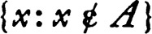. The relative complement of A with respect to a set X is X ∩ ~A, or simply X ~ A. This set is also called the difference of X and A. For each set A it is true that ~~A = A; the corresponding statement for relative complements is slightly more complicated and is given as part of 0.2.
One must distinguish very carefully between “member” and “subset.” The set whose only member is x is called singleton x and is denoted {x}. Observe that {0} is not void, since 0 ε {0}, and hence 0 ≠ {0}. In general, x ε A if and only if {x} ⊂ A.
The two following theorems, of which we prove only a part, state some of the most commonly used relationships between the various definitions given above. These are basic facts and will frequently be used without explicit reference.
1 THEOREM Let A and B be subsets of a set X. Then A ⊂ B if and only if any one of the following conditions holds:
2 THEOREM Let A, B, C, and X be sets. Then:
(a)X ~ (X ~ A) = A ∩ X.
(b)(Commutative laws) A ∪ B = B ∪ A and A ∩ B = B ∩ A.
(c)(Associative laws) A ∪ (B ∪ C) = (A ∪ B) ∪ C and A ∩ (B ∩ C) = (A ∩ B) ∩ C.
(d)(Distributive laws) A ∩ (B ∪ C) = (A ∩ B) ∪ (A ∩ C) and A ∪ (B ∩ C) = (A ∪ B) ∩ (A ∪ C).
(e)(De Morgan formulae) X ~ (A ∪ B) = (X ~ A) ∩ (X ~ B) and X ~ (A ∩ B) = (X ~ A) ∪ (X ~ B).
PROOF Proof of (a) : A point x is a member of X ~ (X ~ A) iff x ε X and 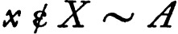. Since iff 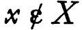 or x ε A, it follows that x ε X ~ (X ~ A) iff x ε X and either or x ε A. The first of these alternatives is impossible, so that x ε X ~ (X ~ A) iff x ε X and x ε A; that is, iff x ε X ∩ A. Hence X ~ (X ~ A) = A ∩ X. Proof of first part of (d): A point x is a member of A ∩ (B ∪ C) iff x ε A and either x ε B or x ε C. This is the case iff either x belongs to both A and B or x belongs to both A and C. Hence x ε A ∩ (B ∪ C) iff x ε (A ∩ B) ∪ (A ∩ C), and equality is proved. ∎
If A1, A2, …, An are sets, then A1 ∪ A2 ∪ … ∪ An is the union of the sets and A1 ∩ A2 ∩ … ∩ An is their intersection. It does not matter how the terms are grouped in computing the union or intersection because of the associative laws. We shall also have to consider the union of the members of non-finite families of sets and it is extremely convenient to have a notation for this union. Consider the following situation: for each member a of a set A, which we call an index set, we suppose that a set Xa is given. Then the union of all the Xa, denoted ∪ {Xa: a ε A}, is defined to be the set of all points x such that x ε Xa for some a in A. In a similar way the intersection of all Xa for a in A, denoted ∩ {Xa: a ε A}, is defined to be {x: x ε Xa for each a in A}. A very important special case arises when the index set is itself a family  of sets and XA is the set A for each A in
of sets and XA is the set A for each A in  . Then the foregoing definitions become: 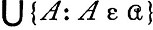 = {x: x ε A for some A in
. Then the foregoing definitions become: 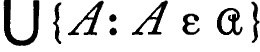 = {x: x ε A for some A in  } and 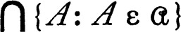 = {x: x ε A for each A in
} and 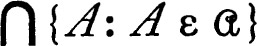 = {x: x ε A for each A in  }.
}.
There are many theorems of an algebraic character on the union and intersection of the members of families of sets, but we shall need only the following, the proof of which is omitted.
3 THEOREM Let A be an index set, and for each a in A let Xa be a subset of a fixed set Y. Then:
(a)If B is a subset of A, then 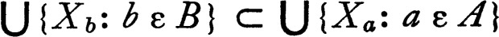 and 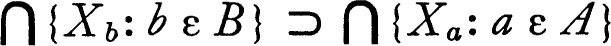.
(b)(De Morgan formulae)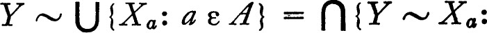  and
and  .
.
The De Morgan formulae are usually stated in the abbreviated form: the complement of the union is the intersection of the complements, and the complement of an intersection is the union of the complements.
It should be emphasized that a reasonable facility with this sort of set theoretic computation is essential. The appendix contains a long list of theorems which are recommended as exercises for the beginning student. (See the section on elementary algebra of classes.)
4 Notes In most of the early work on set theory the union of two sets A and B was denoted by A + B and the intersection by AB, in analogy with the usual operations on the real numbers. Some of the same algebraic laws do hold; however, there is compelling reason for not following this usage. Frequently set theoretic calculations are made in a group, a field, or a linear space. If A and B are subsets of an (additively written) group, then {c: c = a + b for some a in A and some b in B} is a natural candidate for the label “A + B,” and it is natural to denote {x: –x ε A} by –A. Since the sets just described are used systematically in calculations where union, intersection, and complement also appear, the choice of notation made here seems the most reasonable.
The notation used here for construction of sets is the one most widely used today, but 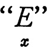 for “the set of all x such that” is also used. The critical feature of a notation of this sort is the following: one must be sure just which is the dummy variable. An example will clarify this contention. The set of all squares of positive numbers might be denoted quite naturally by {x2: x > 0}, and, proceeding, {x2 + a2: x < 1 + 2a} also has a natural meaning. Unfortunately, the latter has three possible natural meanings, namely: {z: for some x and some a, z = x2 + a2 and x < 1 + 2a}, {z: for some x, z = x2 + a2 and x < 1 + 2a}, and {z: for some a, z = x2 + a2 and x < 1 + 2a}. These sets are quite different, for the first depends on neither x nor a, the second is dependent on a, and the third depends on x. In slightly more technical terms one says that “x” and “a” are both dummies in the first, “x” is a dummy in the second, and “a” in the third. To avoid ambiguity, in each use of the brace notation the first space after the brace and preceding the colon is always occupied by the dummy variable.
Finally, it is interesting to consider one other notational feature. In reading such expressions as “A ∩ (B ∪ C)” the parentheses are essential. However, this could have been avoided by a slightly different choice of notation. If we had used “∪AB” instead of “A ∪ B” and similarly for intersection, then all parentheses could be omitted. (This general method of avoiding parentheses is well known in mathematical logic.) In the modified notation the first distributive law and the associative law for unions would then be stated: ∩A ∪ BC = ∪ ∩AB ∩ AC and ∪ A ∪ BC = ∪ ∪ ABC. The shorthand notation also reads well; for example, ∪ AB is the union of A and B.
RELATIONS
The notion of set has been taken as basic in this treatment, and we are therefore faced with the task of defining other necessary concepts in terms of sets. In particular, the notions of ordering and function must be defined. It turns out that these may be treated as relations, and that relations can be defined rather naturally as sets having a certain special structure. This section is therefore devoted to a brief statement of the definitions and elementary theorems of the algebra of relations.
Suppose that we are given a relation (in the intuitive sense) between certain pairs of objects. The basic idea is that the relation may be represented as the set of all pairs of mutually related objects. For example, the set of all pairs consisting of a number and its cube might be called the cubing relation. Of course, in order to use this method of realization it is necessary that we have available the notion of ordered pair. This notion can be defined in terms of sets.* The basic facts which we need here are: each ordered pair has a first coordinate and a second coordinate, and two ordered pairs are equal (identical) if and only if they have the same first coordinate and the same second coordinate. The ordered pair with first coordinate x and second coordinate y is denoted (x,y). Thus (x,y) = (u,v) if and only if x = u and y = v.
It is convenient to extend the device for the formation of sets so that {(x,y) : …} is the set of all pairs (x,y) such that This convention is not strictly necessary, for the same set is obtained by the specification: {z: for some x and some y, z = (x,y) and …}.
A relation is a set of ordered pairs; that is, a relation is a set, each member of which is an ordered pair. If R is a relation we write xRy and (x,y) ε R interchangeably, and we say that x is R-related to y if and only if xRy. The domain of a relation R is the set of all first coordinates of members of R, and its range is the set of all second coordinates. Formally, domain R = {x: for some y, (x,y) ε R} and range R = {y: for some x, (x,y) ε R}. One of the simplest relations is the set of all pairs (x,y) such that x is a member of some fixed set A and y is a member of some fixed set B. This relation is the cartesian product of A and B and is denoted by A × B. Thus A × B = {(x,y): x ε A and y ε B}. If B is non-void the domain of A × B is A. It is evident that every relation is a subset of the cartesian product of its domain and range.
The inverse of a relation R, denoted by R–1, is obtained by reversing each of the pairs belonging to R. Thus R–1 = {(x,y) : (y, x) ε R} and xRy if and only if yR–1x. For example, (A × B)–1 = B × A for all sets A and B. The domain of the inverse of a relation R is always the range of R, and the range of R–1 is the domain of R. If R and S are relations their composition, R ∘ S (sometimes written RS), is defined to be the set of all pairs (x, z) such that for some y it is true that (x,y) ε S and (y, z) ε R. Composition is generally not commutative. For example, if R = {(1,2)} and S = {(0,1)}, then R ∘ S = {(0,2)} and S ∘ R is void. The identity relation on a set X (the identity on X), denoted Δ or Δ(X), is the set of all pairs of the form (x,x) for x in X. The name is derived from the fact that Δ ∘ R = R ∘ Δ = R whenever R is a relation whose range and domain are subsets of X. The identity relation is also called the diagonal, a name suggestive of its geometric position in X × X.
If R is a relation and A is a set, then R[A], the set of all R-relatives of points of A, is defined to be {y: xRy for some x in A}. If A is the domain of R, then R[A] is the range of R, and for arbitrary A the set R[A] is contained in the range of R. If R and S are relations and R ⊂ S, then clearly R[A] ⊂ S[A] for every A.
There is an extensive calculus of relations, of which the following theorem is a fragment.
5 THEOREM Let R, S, and T be relations and let A and B be sets. Then:
(a) (R–1)–1 = R and (R ∘ S)–1 = S–1 ∘ R–1.
(b)R ∘ (S ∘ T) = (R ∘ S) ∘ T and (R ∘ S)[A] = R[S[A]].
(c)R[A ∪ B] = R[A] ∪ R[B] and R[A ∩ B] ⊂ R[A] ∩ R[B].
More generally, if there is given a set Xa for each member a of a non-void index set A then:
(d) R[∪{Xa: a ε A}] = ∪{R[Xa]: a ε A} and R[∩ {Xa: a ε A}] ⊂∩{R[Xa]:a ε A}.
PROOF As an example we prove the equality: (R ∘ S)–1 = S–1 ∘ R–1. A pair (z, x) is a member of (R ∘ S)–1 iff (x,z) ε R ∘ S, and this is the case iff for some y it is true that (x,y) ε S and (y,z) ε R. Consequently (z,x) ε (R ∘ S)–1 iff (z,y) ε R–1 and (y,z) ε S–1 for some y, This is precisely the condition that (z, x) belong to S–1 ∘ R–1. ∎
There are several special sorts of relations which occur so frequently in mathematics that they have acquired names. Aside from orderings and functions, which will be considered in detail in the following sections, the types listed below are probably the most useful. Throughout the following it will be convenient to suppose that R is a relation and that X is the set of all points which belong to either the domain or the range of R; that is, X = (domain R) ∪ (range R). The relation R is reflexive if and only if each point of X is R-related to itself. This is entirely equivalent to requiring that the identity Δ (or Δ(X)) be a subset of R. The relation R is symmetric, provided that xRy whenever yRx. Algebraically, this requirement may be phrased: R = R–1. At the other extreme, the relation R is anti-symmetric iff it is never the case that both xRy and yRx. In other words, R is anti-symmetric iff R ∩ R–1 is void. The relation R is transitive iff whenever xRy and yRz then xRz. In terms of the composition of relations, the relation R is transitive if and only if R ∘ R ⊂ R. It follows that, if R is transitive, then R–1 ∘ R–1 = (R ∘ R)–1 ⊂ R–1, and hence the inverse of a transitive relation is transitive. If R is both transitive and reflexive, then R ∘ R ⊃ R ∘ Δ and hence R ∘ R = R; in the usual terminology, such a relation is idempotent under composition.
An equivalence relation is a reflexive, symmetric, and transitive relation. Equivalence relations have a very simple structure, which we now proceed to describe. Suppose that R is an equivalence relation and that X is the domain of R. A subset A of X is an equivalence class (an R-equivalence class) if and only if there is a member x of A such that A is identical with the set of all y such that xRy. In other words, A is an equivalence class iff there is x in A such that A = R[{x}]. The fundamental result on equivalence relations states that the family  of all equivalence classes is disjoint, and that a point x is R-related to a point y if and only if both x and y belong to the same equivalence class. The set of all pairs (x,y) with x and y in a class A is simply A × A, which leads to the following concise formulation of the theorem.
of all equivalence classes is disjoint, and that a point x is R-related to a point y if and only if both x and y belong to the same equivalence class. The set of all pairs (x,y) with x and y in a class A is simply A × A, which leads to the following concise formulation of the theorem.
6 THEOREM A relation R is an equivalence relation if and only if there is a disjoint family  such that R = ∪ {A × A: A ε
such that R = ∪ {A × A: A ε  }.
}.
PROOF If R is an equivalence relation, then R is transitive: if yRx and zRy, then zRx. In other words, if xRy, then R[{y}] ⊂ R[{x}]. But R is symmetric (xRy whenever yRx), from which it follows that, if xRy, then R[{x}] = R[{y}]. If z belongs to both R[{x}] and R[{y}], then R[{x}] = R[{z}] = R[{y}], and consequently two equivalence classes either coincide or are disjoint. If y and z belong to the equivalence class R[{x}], then, since R[{y}] = R[{x}], it follows that yRz or, in other words, R[{x}] × R[{x}] ⊂ R. Hence the union of A × A for all equivalence classes A is a subset of R, and since R is reflexive, if xRy, then (x,y) ε R[{x}] × R[{x}]. Hence R = ∪{A × A: A ε  }. The straightforward proof of the converse is omitted. ∎
}. The straightforward proof of the converse is omitted. ∎
We are frequently interested in the behavior of a relation for points belonging to a subset of its domain, and frequently the relation possesses properties for these points which it fails to have for all points. Given a set X and a relation R one may construct a new relation R ∩ (X × X) whose domain is a subset of X. For convenience we will say that a relation R has a property on X, or that R restricted to X has the property iff R ∩ (X × X) has the property. For example, R is transitive on X iff R ∩ (X × X) is a transitive relation. This amounts to asserting that the defining property holds for points of X; in this case, whenever X, y, and z are points of X such that xRy and y Rz, then xRz.
FUNCTIONS
The notion of function must now be defined in terms of the concepts already introduced. This offers no difficulty if we consider the following facts. Whatever a function is, its graph has an obvious definition as a set of ordered pairs. Moreover, there is no information about the function which cannot be derived from its graph. In brief, there is no reason why we should attempt to distinguish between a function and its graph.
A function is a relation such that no two distinct members have the same first coordinate. Thus f is a function iff the members of f are ordered pairs, and whenever (x,y) and (x,z) are members of f, then y = z. We do not distinguish between a function and its graph. The terms correspondence, transformation, map, operator, and function are synonymous. If f is a function and x is a point of its domain (the set of all first coordinates of members of f), then f(x), or fx is the second coordinate of the unique member of f whose first coordinate is x. The point f(x) is the value of f at x, or the image of x under f, and we say that f assigns the value f(x) to x, or carries x into f (x). A function f is on X iff X is its domain and it is onto Y iff Y is its range (the set of second coordinates of members of f, sometimes called the set of values). If the range of f is a subset of Y, then f is to Y, or into Y. In general a function is many to one, in the sense that there are many pairs with the same second coordinate or, equivalently, many points at which the function has the same value. A function f is one to one iff distinct points have distinct images; that is, if the inverse relation, f–1, is also a function.
A function is a set, and consequently two functions, f and g, are identical iff they have the same members. It is clear that this is the case iff the domain of f is identical with the domain of g and f(x) = g(x) for each x in this domain. Consequently, we may define a function by specifying its domain and the value of the function at each member of the domain. If f is a function on X to Y and A is a subset of X, then f ∩ (A × Y) is also a function. It is called the restriction of f to A, denoted f|A, its domain is A, and (f|A)(x) = f(x) for x in A. A function g is the restriction of f to some subset iff the domain of g is a subset of the domain of f, and g(x) = f(x) for x in the domain of g; that is, iff g ⊂ f. The function f is called an extension of g iff g ⊂ f. Thus f is an extension of g iff g is the restriction of f to some subset of the domain of f.
If A is a set and f is a function, then, following the definition given for arbitrary relations, f[A] = {y: for some x in A, (x,y) ε f}; equivalently, f[A] is {y: for some x in A, y = f(x)}. The set f[A] is called the image of A under f. If A and B are sets, then, by theorem 0.5, f[A ∪ B] = f[A] ∪ f[B] and f[A ∩ B] ⊂ f[A] ∩ f[B], and similar formulae hold for arbitrary unions and intersections. It is not true in general that f[A ∩ B] = f[A] ∩ f[B], for disjoint sets may have intersecting images. If f is a function, then the set f–1[A] is called the inverse (inverse image, counter image) of A under f. The inverse satisfies the following algebraic rules.
7 THEOREM If f is a function and A and B are sets then
(a)f–1[A ~ B] = f–1[A] ~ f–1[B],
(b)f–1[A ∪ B] = f–1[A] ∪ f–1[B], and
(c)f–1[A ∩ B] = f–1[A] ∩ f–1[B].
More generally, if there is given a set Xc for each member c of a non-void index set C then
(d)f–1[∪ {Xc: c ε C}] = ∪ {f–1[Xc]: c ε C}, and
(e)f–1[∩ {Xc: c ε C}] = ∩ {f–1[Xc]: c ε C}.
PROOF Only part (e) will be proved. A point x is a member of f–1[∩{Xc: c ε C}] if and only if f(x) belongs to this intersection, which is the case iff f(x) ε Xc for each c in C. But the latter condition is equivalent to x ε f–1[Xc] for each c in C; that is, x ε ∩{f–1[Xc]: c ε C). ∎
The foregoing theorem is often summarized as: the inverse of a function preserves relative complements, unions, and intersections. It should be noted that the validity of these formulae does not depend upon the sets A and B being subsets of the range of the function. Of course, f–1[A] is identical with the inverse image of the intersection of A with the range of f. However, it is convenient not to restrict the notation here (and the corresponding notation for images under f) to subsets of the range (respectively, the domain).
The composition of two functions is again a function by a straightforward argument. If f is a function, then f–1 ∘ f is an equivalence relation, for (x,y) ε f–1 ∘ f if and only if f(x) = f(y). The composition f ∘ f–1 is a function; it is the identity on the range of f.
8 Notes There are other notations for the value of a function f at a point x. Besides f(x) and fx, all of the following are in use: (f,x), (x,f), fx, xf, and ·fx. The first two of these are extremely convenient in dealing with certain dualities, where one is considering a family F of functions, each on a fixed domain X, and it is desirable to treat F and X in a symmetric fashion. The notations “fx” and “xf” are obvious abbreviations of the notation we have adopted; whether the “f” is written to the left or to the right of “x” is clearly a matter of taste. These two share a disadvantage which is possessed by the “f(x)” notation. In certain rather complicated situations the notation is ambiguous, unless parentheses are interlarded liberally. The last notation (used by A. P. Morse) is free from this difficulty. It is unambiguous and does not require parentheses. (See the comments on union and intersection in 0.4.)
There is a need for a bound variable notation for a function. For example, the function whose domain is the set of all real numbers and which has the value x2 at the point x should have a briefer description. A possible way out of this particular situation is to agree that x is the identity function on the set of real numbers, in which case x2 might reasonably be the squaring function. The classical device is to use x2 both for the function and for its value at the number x. A less confusing approach is to designate the squaring function by x → x2. This sort of notation is suggestive and is now coming into common use. It is not universal and, for example, the statement (x → x2)(t) = t2 would require explanation. Finally it should be remarked that, although the arrow notation will undoubtedly be adopted as standard, the λ-convention of A. Church has technical advantages. (The square function might be written as λx: x2.) No parentheses are necessary to prevent ambiguity.
ORDERINGS
An ordering (partial ordering, quasi-ordering) is a transitive relation. A relation < orders (partially orders) a set X iff it is transitive on X. If < is an ordering and x < y, then it is customary to say that x precedes y or x is less than y (relative to the order <) and that y follows x and y is greater than x. If A is contained in a set X which is ordered by <, then an element x of X is an upper bound of A iff for each y in A either y < x or y = x. Similarly an element x is a lower bound of A if x is less than or equal to each member of A. Of course, a set may have many different upper bounds. An element x is a least upper bound or supremum of A if and only if it is an upper bound and is less than or equal to every other upper bound. (In other words, a supremum is an upper bound which is a lower bound for the set of all upper bounds.) In the same way, a greatest lower bound or infimum is an element which is a lower bound and is greater than or equal to every other lower bound. A set X is order-complete (relative to the ordering <) if and only if each non-void subset of X which has an upper bound has a supremum. It is a little surprising that this condition on upper bounds is entirely equivalent to the corresponding statement for lower bounds. That is:
9 THEOREM A set X is order-complete relative to an ordering if and only if each non-void subset which has a lower bound has an infimum.
PROOF Suppose that X is order-complete and that A is a non-void subset which has a lower bound. Let B be the set of all lower bounds for A. Then B is non-void and surely every member of the non-void set A is an upper bound for B. Hence B has a least upper bound, say, b. Then b is less than or equal to each upper bound of B, and in particular b is less than or equal to each member of A, and hence b is a lower bound of A. On the other hand, b is itself an upper bound of B; that is, b is greater than or equal to each lower bound of A. Hence b is a greatest lower bound of A. The converse proposition may be proved by the same sort of argument, or, directly, one may apply the result just proved to the relation inverse to <. ∎
It should be remarked that the definition of ordering is not very restrictive. For example, X × X is an ordering of X, but a rather uninteresting one. Relative to this ordering each member of X is an upper bound, and in fact a supremum, of every subset. The more interesting orderings satisfy the further condition: if x is less than or equal to y and y is also less than or equal to x, then y = x. In this case there is at most one supremum for a set, and at most one infimum.
A linear ordering (total, complete, or simple ordering) is an ordering such that:
(a)If x < y and y < x, then x = y, and
(b)x < y or y < x whenever x and y are distinct members of the union of the domain and the range of <.
It should be noticed that a linear ordering is not necessarily reflexive. However, agreeing that x ≦ y iff x < y or x = y, the relation ≦ is always a reflexive linear ordering if < is a linear ordering. Following the usual convention, a relation is said to linearly order a set X iff the relation restricted to X is a linear ordering. A set with a relation which linearly orders it is called a chain. Clearly suprema and infima are unique in chains. The remaining theorems in this section will concern chains, although it will be evident that many of the considerations apply to less restricted orderings.
A function f on a set X to a set Y is order preserving (monotone, isotone) relative to an order < for X and an order < for Y iff f(u) < f(v) or f(u) = f(v) whenever u and v are points of X such that u ≦ v. If the ordering < of Y is simply Y × Y or if the ordering < of X is the void relation, then f is necessarily order preserving. Consequently one cannot expect that the inverse of a one-to-one order preserving function will always be order preserving. However, if X and Y are chains and f is one to one and isotone, then necessarily f–1 is isotone, for if f(u) < f(v) and f(u) ≠ f(v), then it is impossible that v < u because of the order-preserving property.
Order-complete chains have a very special property. Suppose that X and Y are chains, that X0 is a subset of X, and that f is an order-preserving function on X0 to Y. The problem is: Does there exist an isotone extension of f whose domain is X? Unless some restriction is made on f the answer is “no,” for, if X is the set of all positive real numbers, X0 is the subset consisting of all numbers which are less than one, Y = X0 and f is the identity map, then it is easy to see that there is no isotone extension. (Assuming an extension f–, what is f–(1)?) But this example also indicates the nature of the difficulty, for X0 is a subset of X which has an upper bound and f[X0] has no upper bound. If an isotone extension f– exists, then the image under f– of an upper bound for a set A is surely an upper bound for f[A]. A similar statement holds for lower bounds, and it follows that, if a subset A of X0 is order-bounded in X (that is, it has both an upper and lower bound in X), then the image f[A] is order-bounded in Y. The following theorem asserts that this condition is also sufficient for the existence of an isotone extension.
10 THEOREM Let f be an isotone function on a subset X0 of a chain X to an order-complete chain Y. Then f has an isotone extension whose domain is X if and only if f carries order-bounded sets into order-bounded sets. (More precisely stated, the condition is that, if A is a subset of X0 which is order-bounded in X, then f[A] is order-bounded in Y.)
PROOF It has already been observed that the condition is necessary for the existence of an isotone extension, and it remains to prove the sufficiency. We must construct an isotone extension of a given function f. First we note that if A is a subset of X0 which has a lower bound in X, then f[A] has a lower bound, for, choosing a point x in A, the set {y : y ε A and y ≦ x} is order-bounded, hence its image under f is order-bounded, and a lower bound for this image is also a lower bound for f[A]. A similar statement applies to upper bounds. For each x in X let Lx be the set of all members of X0 which are less than or equal to x; that is, Lx = {y: y ≦ x and y ε X0}. If Lx is void, then x is a lower bound for X0, hence f[X0] has an infimum v, and we define f–1(x) to be v. If Lx is not void, then, since x is an upper bound for Lx, the set f[Lx] has an upper bound and hence a supremum, and we define f–1(x) = sup f[Lx]. The straightforward proof that f–1 is an isotone extension of f is omitted. ∎
In certain cases the isotone extension of a function is unique. One such case will occur in treating the decimal expansion of a real number. Without attempting to get the best result of the sort, we give a simple sufficient condition for uniqueness which will apply.
11 THEOREM Let f and g be isotone functions on a chain X to a chain Y, let X0 be a subset of X on which f and g agree, and let Y0 be f[X0], A sufficient condition that f = g is that Y0 intersect every set of the form {y: u < y < v, u ≠ y and y ≠ v}, where u and v are members of Y such that u < v.
PROOF If f ≠ g, then f(x) ≠ g(x) for some x in X, and we may suppose that f(x) < g(x). Each point of X0 which is less than or equal to x maps under f into a point less than or equal to f(x), because f is isotone, and each point which is greater than or equal to x maps under g into a point greater than or equal to g(x), because g is isotone. It follows that no point of X0 maps into the set {y: f(x) < y < g(x), f(x) ≠ y and ≠ g(x)}, and the theorem is proved. ∎
12 Notes There is a natural way to embed a chain in an order-complete chain which is an abstraction of Dedekind’s construction of the real numbers from the set of rational numbers. The process can also be applied to less restricted orderings, as shown by H. M. MacNeille (see Birkhoff [1; 58]). The pattern is very suggestive of the compactification procedure for topological spaces (chapter 5).
ALGEBRAIC CONCEPTS
In this section a few definitions from elementary algebra are given. For the most part these notions are used in the problems. The terminology is standard, and it seems worth while to summarize the few notions which are required.
A group is a pair, (G, ·) such that G is a non-void set and ·, called the group operation, is a function on G × G to G such that: (a) the operation is associative, that is, x · (y · z) = (x · y) · z for all elements x, y and z of G; (b) there is a neutral element, or identity, e, such that e · x = x · e = x for each x in G; and (c) for each x in G there is an inverse element x–1 such that x · x–1 = x–1 · x = e. If the group operation is denoted +, then the element inverse to x is usually written –x. Following the usual custom, the value of the function · at (x,y) is written x · y instead of the usual functional notation ·(x,y), and if no confusion seems likely, the symbol · may be omitted entirely and the group operation indicated by juxtaposition. We shall sometimes say (imprecisely) that G is a group. If A and B are subsets of G, then A·B, or simply AB, is the set of all elements of the form x·y for some x in A and some y in B. The set {x} ·A is also denoted by X·A or simply xA, and similarly for operation on the right. The group is abelian, or commutative, iff x·y = y·x for all members x and y of G. A group H is a subgroup of G iff H ⊂ G and the group operation of H is that of G, restricted to H × H. A subgroup H is normal (distinguished, invariant) iff x ·H = H·x for each x in G. If H is a subgroup of G a left coset of H is a subset which is of the form x·H for some x in G. The family of all left cosets is denoted by G/H. If H is normal and A and B belong to G/H, then A · B is also a member, and, with this definition of group operation, G/H is a group, called the quotient or factor group. A function f on a group G to a group H is a homomorphism, or representation, iff f(x · y) = f(x)·f(y) for all members x and y of G. The kernel of f is the set f–1[e]; it is always an invariant subgroup. If H is an invariant subgroup of G, then the function whose value at x is x · H is a homomorphism, usually called the projection, or quotient map, of G onto G/H.
A ring is a triple (R,+, ·) such that (R,+) is an abelian group and · is a function on R × R to R such that: the operation is associative, and the distributive laws u · (x + y) = u·x + u·y and (u + v)·X = u · x + v·x hold for all members x, y, u, and v of R. A subring is a subset which, under the ring operations restricted, is a ring, and a ring homomorphism or representation is a function f on a ring to another ring such that f(x + y) = f(x) + f(y) and f(x · y) = f(x) · f(y) for all members x and y of the domain. An additive subgroup I of a ring R is a left ideal iff xI ⊂ I for each x in R, and is a two-sided ideal iff xI ⊂ I and Ix ⊂ I for each x in R. If I is a two-sided ideal, R/I is, with the proper addition and multiplication, a ring, and the projection of R onto R/I is a ring homomorphism. A field is a ring (F,+, ·) such that F has at least two members, and (F ~ {0},·), where 0 is the element neutral with respect to +, is a commutative group. The operation + is the addition operation, · is the multiplication, and the element neutral with respect to multiplication is the unit, 1. It is customary, when no confusion results, to replace · by juxtaposition, and, ignoring the operations, to say that “F is a field.” A linear space, or vector space, over a field F (the scalar field of the space) is a quadruple (X, ⊕, ·,F), such that (X, ⊕) is an abelian group and · is a function on F × X to X such that for all members x and y of X, and all members a and b of F, a·(b·x) = (a·b)·x, (a + b)·x = a·x ⊕ b·x, a·(x ⊕ y) = a·x ⊕ a·y, and 1 ·x = x. A real linear space is a linear space over the field of real numbers. The notion of linear space can also be formulated in a slightly different fashion. The family of all homomorphisms of an abelian group into itself becomes, with addition defined pointwise and with composition of functions as multiplication, a ring, called the endomorphism ring of the group. A linear space over a field F is a quadruple (X,⊕,·,F) such that (X, ⊕) is an abelian group and ⊕ is a ring homomorphism of F into the endomorphism ring of (X, ⊕) which carries the unit, 1, into the identity homomorphism.
A linear space (Y, ⊕,⊙ ,F) is a subspace of a linear space (X,+,·,F) iff Y ⊂ X and the operations + and · agree with ⊕ and ⊙ where the latter are defined. The family X/Y of cosets of X modulo a subspace Y may be made into a linear space if addition and scalar multiplication are defined in the obvious way. The projection f of X onto X/Y then has the property that f(a·x + b·y) = a·f(x) + b·f(y) for all members a and b of Fand all x and y in X. Such a function is called a linear function. If f is a linear function the set f–1[0] is called the null space of f; the null space of a linear function is a linear subspace of the domain (provided the operations of addition and scalar multiplication are properly defined).
Suppose f is a linear function on X to Y and g is a linear map of X onto Z such that the null space of f contains the null space of g. Then there is a unique linear function h on Z to Y such that f = h ∘ g (explicitly, h(z) is the unique member of f ∘ g–1[z]). (The function h is said to be induced by f and g.) A particular consequence of this fact is that each linear function may be written as a projection into a quotient space followed by a one-to-one linear function.
THE REAL NUMBERS
This section is devoted to the proof of a few of the most important results concerning the real numbers.
An ordered field is a field F and a subset P, called the set of positive elements, such that
(a)if x and y are members of P, then x + y and xy are also members; and
(b)if x is a member of F, then precisely one of the following statements is true: x ε P, – x ε P, or x = 0.
One easily verifies that < is a linear ordering of F, where, by definition, x < y iff y – x ε P. The usual simple propositions about adding and multiplying inequalities hold. The members x of F such that – x ε P are negative.
It will be assumed that the real numbers are an ordered field which is order-complete) in the sense that every non-void subset which has an upper bound has a least upper bound, or supremum. By 0.9 this last requirement is entirely equivalent to the statement that each non-void subset which has a lower bound has a greatest lower bound, or infimum.
We first prove a few propositions about integers. An inductive set is a set A of real numbers such that 0 ε A, and whenever x ε A, then x + 1 ε A. A real number x is a non-negative integer iff x belongs to every inductive set. In other words, the set ω of non-negative integers is defined to be the intersection of the members of the family of all inductive sets. Each member of ω is actually non-negative because the set of all non-negative numbers is inductive. It is evident that ω is itself an inductive set and is a subset of every other inductive set. It follows that (principle of mathematical induction) each inductive subset of ω is identical with ω. A proof which relies on this principle is a proof by induction. We prove the following little theorem as an example: if p and q are non-negative integers and p < q, then q – p ε ω. First observe that the set consisting of 0 and all numbers of the form p + 1 with p in ω is inductive, and hence each non-zero member of ω is of the form p + 1. Next, let A be the set of all non-negative integers p such that q – p ε ω) for each larger member q of ω. Surely 0 ε A, and let us suppose that p is a member of A and that q is an arbitrary member of ω which is larger than p + 1. Then p < q – 1 and therefore q – 1 – p ε ω, because p ε A and q – 1 ε ω. Consequently p + 1 ε A, hence A is an inductive set, and therefore A = ω. It is equally simple to show that the sum of two members of ω is a member of ω, and it follows that the set {x: x ε ω or – x ε ω} is a group. It is the group of integers.
There is another form of the principle of mathematical induction which is frequently convenient, namely: each non-void subset A of ω has a smallest member. To prove this proposition consider the set B of all members of ω which are lower bounds for A; that is, B = {p: p ε ω and p ≦ q for all q in A}. The set B is not inductive, for, if q ε A, then 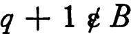. Since 0 ε B it follows that there is a member p of B such that 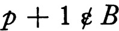. If p ε A, then clearly p is the smallest member of A; otherwise there is a member q of A such that p < q < p + 1. But then q – p is a non-zero member of ω and hence q – p – 1 is a negative member of ω, which is impossible.
It is possible to define a function by induction in the following sense. For each non-negative integer p let ωp = {q: q ε ω and q ≦ p}. Suppose that we seek a function on ω, that the functional value a at 0 is given, and for each function g on a set ωp there is given F(g), the value of the desired function at p + 1. Thus the value desired at p + 1 may depend on all of the values for smaller integers. In these circumstances it is true that there is a unique function f on ω such that f(0) = a and f(p + 1) = F(f | ωp) for each p in ω. (The function f | ωp is the function f restricted to the set ωp.) This proposition is frequently considered to be obvious, but the proof is not entirely trivial.
13 THEOREM Suppose a is given and F(g) is given whenever g is a function whose domain is of the form ωp for some p in ω. Then there is a unique function f such that f(0) = a and f(p + 1) = F(f | ωp) for each p in ω.
PROOF Let  be the family of all functions g such that the domain of g is a set ωp for some p in ω, g(0) = a, and for each member q of ω such that q ≦ p – 1, g(q + 1) = F(g | ωq). (Intuitively, the members of
be the family of all functions g such that the domain of g is a set ωp for some p in ω, g(0) = a, and for each member q of ω such that q ≦ p – 1, g(q + 1) = F(g | ωq). (Intuitively, the members of  are initial segments of the desired function.) The family
are initial segments of the desired function.) The family  has the very important property: if g and h are members of
has the very important property: if g and h are members of  , then either g ⊂ h or h ⊂ g. To prove this it is necessary to show that g(q) = h(q) for each q belonging to the domain of both. Suppose this is false, and let q be the smallest integer such that g(q) ≠ h(q). Then q ≠ 0, because g(0) = h(0) = a, and hence g(q) = F(g | ωq–1) which, since g and h agree for values smaller than q, is F(h | ωq–1) = h(q), and this is a contradiction. Now let 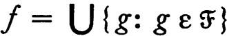. Then the members of f are surely ordered pairs, and if (x,y) ε g ε
, then either g ⊂ h or h ⊂ g. To prove this it is necessary to show that g(q) = h(q) for each q belonging to the domain of both. Suppose this is false, and let q be the smallest integer such that g(q) ≠ h(q). Then q ≠ 0, because g(0) = h(0) = a, and hence g(q) = F(g | ωq–1) which, since g and h agree for values smaller than q, is F(h | ωq–1) = h(q), and this is a contradiction. Now let 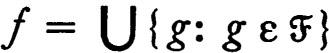. Then the members of f are surely ordered pairs, and if (x,y) ε g ε  and (x, z) ε h ε
and (x, z) ε h ε  , then (x,y) and (x, z) both belong to g or both to h, and hence y = z. Consequently f is a function, and it must be shown that it is the required function. First, because {(0,a)} ε
, then (x,y) and (x, z) both belong to g or both to h, and hence y = z. Consequently f is a function, and it must be shown that it is the required function. First, because {(0,a)} ε  , f(0) = a. Next, if q + 1 belongs to the domain of f, then for some g in
, f(0) = a. Next, if q + 1 belongs to the domain of f, then for some g in  , q + 1 is a member of the domain of g, and hence f(q + 1) = g(q + 1) = F(g | ωq) = F(f | ωq). Finally, to show that the domain of f is ω, suppose that q is the first member of ω which is not in the domain of f. Then q – 1 is the last member of the domain of f, and f ∪ {(q, F(f))} is a member of
, q + 1 is a member of the domain of g, and hence f(q + 1) = g(q + 1) = F(g | ωq) = F(f | ωq). Finally, to show that the domain of f is ω, suppose that q is the first member of ω which is not in the domain of f. Then q – 1 is the last member of the domain of f, and f ∪ {(q, F(f))} is a member of  . Hence q belongs to the domain of f, which is a contradiction. ∎
. Hence q belongs to the domain of f, which is a contradiction. ∎
The foregoing theorem can be used systematically in showing the elementary properties of the real numbers. For example, if b is a positive number and p an integer, bp is defined as follows. In the foregoing theorem, let a = 1 and for each function g with domain ωp let F(g) = bg(p). Then f(0) = 1 and f(p + 1) = bf(p) for each p in ω, if f is the function whose existence is guaranteed by the theorem. Letting bp = f(p), it follows that b0 = 1, and bp+1 = bbp, from which one can show by induction that bp+q = bpbq for all members p and q of ω. If b–p is defined to be 1/bp for each non-negative integer p, then the usual elementary proof shows that bp+q = bpbq for all integers p and q.
So far in this discussion of the real numbers we have not used the fact that the field of real numbers is order-complete. We now prove a simple, but noteworthy, consequence of order completeness. First, the set ω of non-negative integers does not have an upper bound, for, if x were a least upper bound of ω, then x – 1 would not be an upper bound, and hence x – 1 < p for some p in ω. But then x < p + 1 and this contradicts the fact that x was supposed to be an upper bound. Consequently, if x is a positive real number and y is a real number, then px > y for some positive integer p because there is a member p of ω which is larger than y/x. An ordered field for which this proposition is true is said to have an Archimedean order.
We will need the fact that each non-negative real number has a b-adic expansion, where b is an arbitrary integer greater than one. Roughly speaking, we want to write a number x as the sum of multiples of powers of b, the multiples (digits) being non-negative integers less than b. Of course, the b-adic expansion of a number may fail to be unique—in the decimal expansion, .9999… (all nines) and 1.000… (all zeros) are to be expansions of the same real number. The expansion itself is a function which assigns to each integer an integer between 0 and b – 1, such that (since we want only a finite number of non-zero integers before the decimal point) there is a first non-zero digit. Formally, a is a b-adic expansion iff a is a function on the integers to ωb–1 ( = {q: q ε ω and q ≦ b – 1}), such that there is a smallest integer p for which ap (= a(p)) is not zero. A b-adic expansion a is rational iff there is a last non-zero digit (that is, for some integer p, aq = 0 whenever q > p). For each rational b-adic expansion a there is a simple way of assigning a corresponding real number r(a). Except for a finite number of integers p the number apb–p is zero, and the sum of apb–p for p in this finite set is the real number r(a). We write r(a) = ∑{apb–p: p an integer}. A real number which is of this form is a b-adic rational. These numbers are precisely those of the form, qb–p, for integers p and q. Let E be the set of all b-adic expansions. Then E is linearly ordered by dictionary order; in detail, a b-adic expansion a precedes a b-adic expansion c in dictionary order (lexicographic order) iff for the smallest integer p such that ap ≠ cp it is true that ap < cp. It is very easy to see that, like a dictionary, E is actually linearly ordered by <. The correspondence r is order preserving, and this is the key to the following proposition.
14 THEOREM Let E be the set of b-adic expansions, let R be the set of rational expansions, and for a in R let r(a) = ∑{apb–p: p an integer}. Then there is a unique isotone extension 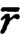 of r whose domain is E, and maps E ~ R onto the positive real numbers in a one-to-one fashion.
PROOF According to theorem 0.10 there will be an isotone extension of r iff r carries each subset of R which is order-bounded in E into an order-bounded subset of the real numbers. But for each a in E there is evidently b in R such that b > a, and it follows that, if a subset A of R has a for an upper bound, then r(b) is an upper bound for f[A|. A similar argument applies to lower bounds, and we conclude that r carries order-bounded sets into order-bounded sets and consequently has an isotone extension whose domain is E.
To show the extension is unique it is sufficient, by 0.11, to prove that, for non-negative real numbers x and y, if x < y, then there is a in R such that x < r(a) < y. Because bp > p for each non-negative integer p (a fact which is easily proved by induction), and because the set of non-negative integers is not bounded, there is an integer p such that bp > 1/(y – x). Then b–p < (y – x). There is an integer q such that qb–p ≧ y because the ordering is Archimedean, and since there is a smallest such integer q, it may be supposed that (q – 1)b–p < y. It follows that (q – 1)b–p > x because b–p is less than (y – x) and this proves that there is a b-adic rational, (q – 1)b–p, which is the image of a member of R and lies between x and y. Consequently the correspondence is unique.
Next, we show that the correspondence is one to one on E ~ R. It is straightforward to see that is one to one on R, and this fact is assumed in the following. Suppose that a ε E, c ε E ~ R, and a < c. Then for the first value of p such that ap and cp are different, ap < cp. The expansion d, such that for q < p, dq = aq, for q > p, dq = 0, and dp = ap + 1, is a member of R which is greater than a, and since c does not have a last non-zero digit, a < d < c. Repeating, there is a member e of R such that a < d < e < c. Then, since on R the function is one to one, 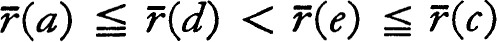, and is therefore one to one on E ~ R.
Finally, it must be shown that the image of E ~ R under is the set of all positive numbers. First notice that for every pair of members c and d of R for which c < d there is a in E ~ R such that c < a < d, and consequently for positive real numbers x and y with x < y there is a in E ~ R such that 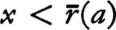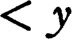. If now x is a positive real number which is not the image of a member of E ~ R, let F = {a: a ε E ~ R and 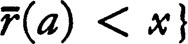. If the set F has a supremum c then, 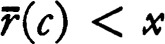 no point of E ~ R maps into the interval 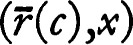, and if 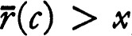, then ( is order preserving) no point of E ~ R maps into the interval 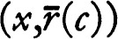. In either event a contradiction results, and the theorem will follow if it is shown that each non-empty subset of E ~ R which has an upper bound has a supremum : that is, E ~ R is order-complete. Suppose then that F is a non-void subset of E ~ R which has an upper bound. Then there is a smallest integer p such that ap ≠ 0 for some a in F. Define cq to be zero for q < p, let Fp be the set of all members a of F with non-zero p-th digit ap, and let cp = max {ap: a ε Fp}. Continue inductively, letting Fp+1 be the set of all members a of Fp such that aq = cq for q = p, and let cp+1 = max {ap+1: a ε Fp+1}. No one of the sets Fp can be void and without difficulty one sees that the expansion c obtained by this construction is an upper bound of F, and in fact a supremum, and that c ε E ~ R. ∎
The foregoing theorem will be used for b equal to two, three, and ten. The b-adic expansions are then called dyadic, triadic, and decimal, respectively.
COUNTABLE SETS
A set is finite iff it can be put into one-to-one correspondence with a set of the form {p: p ε ω and p < q), for some q in ω. A set A is countably infinite iff it can be put into one-to-one correspondence with the set ω of non-negative integers; that is, iff A is the range of some one-to-one function on ω. A set is countable iff it is either finite or countably infinite.
15 THEOREM A subset of a countable set is countable.
PROOF Suppose A is countable, f is one to one on ω with range A, and that B ⊂ A. Then f, restricted to f–1[B], is a one-to-one function on a subset of ω with range B, and if it can be shown that f–1[B] is countable, then a one-to-one function onto B can be constructed by composition. The proof therefore reduces to showing that an arbitrary subset C of ω is countable. Let g(0) be the first member of C, and proceeding inductively, for p in ω, let g(p) be the first member of C different from g(0), g(1), …, g(p – 1). If this choice is impossible for some p then g is a function on {q: q ε ω and q < p} with range C, and C is finite. Otherwise (using 0.13 on the construction of functions by induction) there is a function g on ω such that, for each p in ω, g(p) is the first member of C different from g(0), g(1), …, g(p – 1). Clearly g is one to one. It is easily verified by induction that g(p) ≧ p for all p, and hence it follows from the choice of g(p + 1) that each member p of C is one of the numbers g(q) for q ≦ p. Therefore the range of g is C. ∎
16 THEOREM If the domain of a function is countable, then the range is also countable.
PROOF It is sufficient to show that, if A is a subset of ω and f is a function on A onto B, then B is countable. Let C be the set of all members x of A such that, if y ε A and y < x, then f(x) ≠ f(y); that is, C consists of the smallest member of each of the sets f–1[y] for y in B. Then f | C maps C onto B in a one-to-one fashion, and since C is countable by 0.15, so is B. ∎
17 THEOREM If  is a countable family of countable sets, then
is a countable family of countable sets, then  is countable.
is countable.
PROOF Because  is countable there is a function F whose domain is a subset of ω and whose range is
is countable there is a function F whose domain is a subset of ω and whose range is  . Since F(p) is countable for each p in ω, it is possible to find a function Gp on a subset of {p} × ω whose range is F(p). Consequently there is a function (the union of the functions Gp) on a subset of ω × ω whose range is
. Since F(p) is countable for each p in ω, it is possible to find a function Gp on a subset of {p} × ω whose range is F(p). Consequently there is a function (the union of the functions Gp) on a subset of ω × ω whose range is  , and the problem reduces to showing that ω × ω is countable. The key to this proof is the observation that, if we think of ω × ω as lying in the upper right-hand part of the plane, the diagonals which cross from upper left to lower right contain only a finite number of members of ω × ω. Explicitly, for n in ω, let Bn = {(p, q): (p, q) ε ω × ω and p + q = n}. Then Bn contains precisely n + 1 points, and the union ∪{Bn: n ε ω} is ω × ω. A function on ω with range ω × ω may be constructed by choosing first the members of B0, next those of B1, and so on. The explicit definition of such a function is left to the reader. ∎
, and the problem reduces to showing that ω × ω is countable. The key to this proof is the observation that, if we think of ω × ω as lying in the upper right-hand part of the plane, the diagonals which cross from upper left to lower right contain only a finite number of members of ω × ω. Explicitly, for n in ω, let Bn = {(p, q): (p, q) ε ω × ω and p + q = n}. Then Bn contains precisely n + 1 points, and the union ∪{Bn: n ε ω} is ω × ω. A function on ω with range ω × ω may be constructed by choosing first the members of B0, next those of B1, and so on. The explicit definition of such a function is left to the reader. ∎
The characteristic function of a subset A of a set X is the function f such that f(x) = 0 for x in X ~ A and f(x) = 1 for x in A. A function f on a set X which assumes no value other than zero and one is called a characteristic function; it is clearly the characteristic function of f–1[1]. The function which is zero everywhere is the characteristic function of the void set, and the function which is identically one on X is the characteristic function of X. Two sets have the same characteristic functions iff they are identical, and hence there is a one-to-one correspondence between the family of all characteristic functions on a set X and the family of all subsets of X.
If ω is the set of non-negative integers, the family of all characteristic functions on ω may be put into one-to-one correspondence with the set F of all dyadic expansions a such that ap = 0 for p < 0. The family of all finite subsets of ω corresponds in a one-to-one way to the subfamily G of F consisting of rational dyadic expansions. We now use the classical Cantor process to prove that F is uncountable.
18 THEOREM The family of all finite subsets of a countably infinite set is countable, but the family of all subsets is not.
PROOF In view of the remarks preceding the statement of the theorem it is sufficient to show that the set F of all dyadic expansions a with ap = 0 for p negative is uncountable, and that the subset G of F consisting of rational expansions is countable. Suppose that f is a one-to-one function on ω with range F. Let a be the member of F such that ap = 1 – f(p)p for each non-negative integer p. That is, the p-th digit of a is one minus the p-th digit of f(p). Then a ε F and clearly, for each p in ω, a ≠ f(p) because a and f(p) differ in the p-th digit. It follows that a does not belong to the range of f, and this is a contradiction. Hence F is uncountable.
It remains to be proved that G is countable. For p in ω let Gp = {a: a ε G and aq = 0 for q > p}. Then G0 contains just two elements, and since there are precisely twice as many members in Gp+1 as in Gp, it follows that Gp is always finite. Hence G = ∪{GP: p ε ω} is countable. ∎
The natural correspondence between F and a subset of the real numbers is, according to 0.14, one to one on F ~ G. Since G is countable, F ~ G must be uncountable. Hence
19 COROLLARY The set of all real numbers is uncountable.
CARDINAL NUMBERS
Many of the theorems on countability are special cases of more general theorems on cardinal numbers. The set ω of non-negative integers played a special role in the above and, in a more general way, this role may be occupied by sets (of which ω is one) called cardinal numbers. Let us agree that two sets, A and B, are equipollent iff there is a one-to-one function on A with range B. It turns out that for every set A there is a unique cardinal number C such that A and C are equipollent. If C and D are distinct cardinal numbers, then C and D are not equipollent but one of the cardinal numbers, say C, and a proper subset of the other are equipollent. In this case C is said to be the smaller cardinal number and we write C < D. With this definition of order the family of all cardinal numbers is linearly ordered, and even more, every non-void subfamily has a least member. (These facts are proved in the appendix.)
Accepting the facts in the previous paragraph for the moment it follows that, if A and B are sets, then there is a one-to-one function on A to a subset of B, or the reverse, because there are cardinal numbers C and D such that A and C, and B and D, respectively, are equipollent. Suppose now that there is a one-to-one function on A to a subset of B and also a one-to-one function on B to a subset of A. Then C and a subset of D are equipollent, and D and a subset of C are equipollent, from which it follows, since the ordering of the cardinal numbers is linear, that C = D. Hence A and B are equipollent. This is the classical Schroeder-Bernstein theorem. We give a direct proof of this theorem which is independent of the general theory of cardinal numbers because the proof gives non-trivial additional information.
20 THEOREM If there is a one-to-one function on a set A to a sub-set of a set B and there is also a one-to-one function on B to a subset of A, then A and B are equipollent.
PROOF Suppose that f is a one-to-one map of A into B and g is one to one on B to A. It may be supposed that A and B are disjoint. The proof of the theorem is accomplished by decomposing A and B into classes which are most easily described in terms of parthenogenesis. A point x (of either A or B) is an ancestor of a point y iff y can be obtained from x by successive application of f and g (or g and f). Now decompose A into three sets: let AE consist of all points of A which have an even number of ancestors, let A0 consist of points which have an odd number of ancestors, and let A1 consist of points with infinitely many ancestors. Decompose B similarly and observe: f maps AE onto Bo and AI onto BI, and g–1 maps Ao onto BE. Hence the function which agrees with f on AE ε ∪ AI and agrees with g–1 on Ao is a one-to-one map of A onto B. ∎
21 Notes The foregoing proof does not use the axiom of choice, which is interesting but not very important. It is important to notice that the function desired was constructed from the two given functions by a countable process. Explicitly, if f is a one-to-one function on A to B and g is one to one on B to A, if Eo = A ~ g[B], En+1 = g ∘ f[En] for each n, and if E = ⋃ {En: n ε ω}, then the function h which is equal to f on E and equal to g–1 on A ~ E is a one-to-one map of A onto B. (More precisely, h = (f | E) ∪ (g–1 | A ~ E).) The importance of this result lies in the fact that, if f and g have certain pleasant properties (such as being Borel functions), then h retains these properties.
The intuitively elegant form of the proof of theorem 0.20 is due to G. Birkhoff and S. MacLane.
ORDINAL NUMBERS
Except for examples, the ordinal numbers will not be needed in the course of this work. However, several of the most interesting counter examples are based on extremely elementary properties of the ordinals and it seems proper to state here the few facts which are necessary for these. (The ordinal numbers are constructed and these and other properties proved in the appendix.)
22 SUMMARY There is an uncountable set Ω′, which is linearly ordered by a relation < in such a way that:
(a)Every non-void subset of Ω′ has a smallest element.
(b)There is a greatest element Ω of Ω′.
(c)If x ε Ω′ and x ≠ Ω, then the set of all members of Ω′ which precede x is countable.
The set Ω′ is the set of all ordinals which are less than or equal to Ω, the first uncountable ordinal. A linearly ordered set such that every non-void subset has a least element is well ordered, In particular, each non-void subset of a well-ordered set has an infimum. Since every subset of Ω′ has an upper bound, namely, Ω, it follows by 0.9 that every non-void subset of Ω′ has a supremum. One of the curious facts about Ω′· is the following.
23 THEOREM If A is a countable subset of Ω′ and 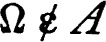, then the supremum of A is less than Ω.
PROOF Assume that A is a countable subset of Ω′ and that . For each member a of A the set {x: x ≦ a} is countable and hence the union of all such sets is countable. This union is {x: x ≦ a for some a in A} and the supremum b of the union is therefore an upper bound for A. The point b has only a countable number of predecessors relative to the ordering, and hence b ≠ Ω. It follows that the supremum of A is less than Ω. ∎
One member of Ω′ deserves special notice. The first member of Ω′ which does not have a finite number of predecessors is the first non-finite ordinal and is denoted ω. The symbol ω has already been used to denote the set of non-negative integers. In the construction of the ordinal numbers it turns out that the first non-finite ordinal is, in fact, the set ω of non-negative integers!
CARTESIAN PRODUCTS
If A and B are sets the cartesian product A × B has been defined as the set of all ordered pairs (x,y) such that x ε A and y ε B. It is useful to extend the definition of cartesian product to families of sets, just as the notion of union and intersection was extended to arbitrary families of sets. Suppose that for each member a of an index set A there is given a set Xa. The Cartesian product of the sets Xa, written ⨉{Xa: a ε A}, is defined to be the set of all functions x on A such that x{a) ε Xa for each a in A. It is customary to use subscript notation rather than the usual functional notation, so that ⨉{Xa: a ε A} = {x: x is a function on A and xa ε Xa for a in A). The definition is initially a little surprising but it is actually a precise statement of the intuitive concept: a point x of the product consists of a point (namely, xa) selected from each of the sets Xa. The set Xa is the a-th coordinate set, and the point xa is the a-th coordinate of the point x of the product. The function Pa which carries each point x of the product onto its a-th coordinate xa is the projection into the a-th coordinate set. That is, Pa(x) = xa. The map Pa is also called the evaluation at a.
There is an important special case of a cartesian product. Suppose that the coordinate set Xa is a fixed set Y for each a in the index set A. Then the cartesian product ⨉{Xa: a ε A} = ⨉{Y: a ε A} = {x: x is a function on A to Y}. Thus ⨉{Y: a ε A} is precisely the set of all functions on A to Y, sometimes written YA. A familiar instance is real Euclidean n-space. This is the set of all real-valued functions on a set consisting of the integers 0, 1, …, n – 1, and the i-th coordinate of a member x is xi.
There is another interesting special case. Suppose the index set is itself a family  of sets, and that for each A in
of sets, and that for each A in  the A-th coordinate set is A. In this case the cartesian product ⨉{A: A ε
the A-th coordinate set is A. In this case the cartesian product ⨉{A: A ε  } is the family of all functions x on
} is the family of all functions x on  such that xA ε A for each A in
such that xA ε A for each A in  . These functions, members of the cartesian product, are sometimes called choice functions for
. These functions, members of the cartesian product, are sometimes called choice functions for  , since intuitively the function x “chooses” a member xA from each set A. If the empty set is a member of
, since intuitively the function x “chooses” a member xA from each set A. If the empty set is a member of  , then there is clearly no choice function for
, then there is clearly no choice function for  ; that is, the cartesian product is void. If the members of
; that is, the cartesian product is void. If the members of  are not empty it is still not entirely obvious that the cartesian product is non-void, and, in fact, the question of the existence of a choice function for such a family turns out to be quite delicate. The next section is devoted to several propositions, each equivalent to a positive answer to the question. We shall assume as an axiom the most convenient one of these propositions. (A different choice is made in the appendix; together with the next section, this shows the equivalence of the various statements.) With unusual self-restraint we refrain from discussing the philosophical implications.
are not empty it is still not entirely obvious that the cartesian product is non-void, and, in fact, the question of the existence of a choice function for such a family turns out to be quite delicate. The next section is devoted to several propositions, each equivalent to a positive answer to the question. We shall assume as an axiom the most convenient one of these propositions. (A different choice is made in the appendix; together with the next section, this shows the equivalence of the various statements.) With unusual self-restraint we refrain from discussing the philosophical implications.
HAUSDORFF MAXIMAL PRINCIPLE
If  is a family of sets (or a collection of families of sets) a member A is the largest member of
is a family of sets (or a collection of families of sets) a member A is the largest member of  if it contains every other member; that is, if A is larger than every other member of
if it contains every other member; that is, if A is larger than every other member of  . Similarly, A is the smallest member of the family iff A is contained in each member. It is frequently of importance to know that a family has a largest member or a smallest member. Clearly the largest and smallest members are unique when they exist. However, even in cases where the family
. Similarly, A is the smallest member of the family iff A is contained in each member. It is frequently of importance to know that a family has a largest member or a smallest member. Clearly the largest and smallest members are unique when they exist. However, even in cases where the family  has no largest member, there may be a member such that no other member properly contains A, although there are members which neither contain nor are contained in A. Such a member is called a maximal member of the family. Formally, A is a maximal member of
has no largest member, there may be a member such that no other member properly contains A, although there are members which neither contain nor are contained in A. Such a member is called a maximal member of the family. Formally, A is a maximal member of  iff no member of
iff no member of  properly contains A. Similarly A is a minimal member of
properly contains A. Similarly A is a minimal member of  iff no member of
iff no member of  is properly contained in A. It is very easy to make examples of families which have no maximal member, or families in which each member is both maximal and minimal (for example a disjoint family). In general, some special hypothesis must be added to ensure the existence of maximal members.
is properly contained in A. It is very easy to make examples of families which have no maximal member, or families in which each member is both maximal and minimal (for example a disjoint family). In general, some special hypothesis must be added to ensure the existence of maximal members.
A family  of sets is a nest (sometimes called a tower or a chain) iff, whenever A and B are members of the family, then either A ⊂ B or B ⊂ A. This is precisely the same thing as saying that the family
of sets is a nest (sometimes called a tower or a chain) iff, whenever A and B are members of the family, then either A ⊂ B or B ⊂ A. This is precisely the same thing as saying that the family  is linearly ordered by inclusion, or, in our terminology, that
is linearly ordered by inclusion, or, in our terminology, that  with the inclusion relation is a chain. If 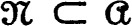 and
with the inclusion relation is a chain. If 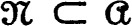 and  is a nest, then
is a nest, then  is a nest in
is a nest in  . We know that a family of sets may fail to have a maximal element. Let us consider the collection of all nests in a fixed family
. We know that a family of sets may fail to have a maximal element. Let us consider the collection of all nests in a fixed family  and ask if among these there is a maximal nest. That is, for each family
and ask if among these there is a maximal nest. That is, for each family  , is there a nest
, is there a nest  in
in  which is properly contained in no nest in
which is properly contained in no nest in  ? We assume the following statement as an axiom.
? We assume the following statement as an axiom.
24 HAUSDORFF MAXIMAL PRINCIPLE If  is a family of sets and
is a family of sets and  is a nest in
is a nest in  , then there is a maximal nest
, then there is a maximal nest  in
in  which contains
which contains  .
.
The next theorem lists a number of important consequences of the Hausdorff maximal principle. Before stating the results we review some of the terminology which is commonly used in this connection. A family  of sets is of finite character iff each finite subset of a member of
of sets is of finite character iff each finite subset of a member of  is a member of
is a member of  , and each set A, every finite subset of which belongs to
, and each set A, every finite subset of which belongs to  , itself belongs to
, itself belongs to  . If < is an ordering of a set A, then a subset B which is linearly ordered by < is called a chain in A. A maximal element of the ordered set A is an element x such that x follows each comparable element of A; that is, if y ε A, then either y precedes x or x does not precede y. A relation < is a well ordering of a set A iff < is a linear ordering of A such that each non-void subset has a first member (a member which is less than or equal to every other member). If there exists a well ordering of A, then we say that A can be well ordered.
. If < is an ordering of a set A, then a subset B which is linearly ordered by < is called a chain in A. A maximal element of the ordered set A is an element x such that x follows each comparable element of A; that is, if y ε A, then either y precedes x or x does not precede y. A relation < is a well ordering of a set A iff < is a linear ordering of A such that each non-void subset has a first member (a member which is less than or equal to every other member). If there exists a well ordering of A, then we say that A can be well ordered.
25 THEOREM
(a)MAXIMAL PRINCIPLE There is a maximal member of a family  of sets, provided that for each nest in
of sets, provided that for each nest in  there is a member of
there is a member of  which contains every member of the nest,
which contains every member of the nest,
(b)MINIMAL PRINCIPLE There is a minimal member of a family  , provided that for each nest in
, provided that for each nest in  there is a member of
there is a member of  which is contained in every member of the nest.
which is contained in every member of the nest.
(c)TUKEY LEMMA There is a maximal member of each non-void family of finite character.
(d)KURATOWSKI LEMMA Each chain in a (partially) ordered set is contained in a maximal chain.
(e)ZORN LEMMA If each chain in a partially ordered set has an upper bound, then there is a maximal element of the set.
(f)AXIOM OF CHOICE If Xa is a non-void set for each member a of an index set A, then there is a function c on A such that c(a) ε Xa for each a in A.
(g)ZERMELO POSTULATE If  is a disjoint family of non-void sets y then there is a set C such that A ∩ C consists of a single point for every A in
is a disjoint family of non-void sets y then there is a set C such that A ∩ C consists of a single point for every A in  .
.
(h)WELL-ORDERING PRINCIPLE Each set can be well ordered.
PROOF We sketch the proof of each of these propositions, leaving a good many of the details to the reader.
Proof of (a) : Choose a maximal nest  in
in  and let A be a member of
and let A be a member of  containing 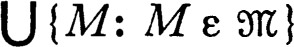. Then A is a maximal member of
containing 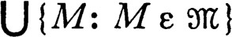. Then A is a maximal member of  , for if A is properly contained in a member B of
, for if A is properly contained in a member B of  , then
, then  ∪ {B} is a nest in
∪ {B} is a nest in  which properly contains
which properly contains  , which is a contradiction.
, which is a contradiction.
Proof of (b) : A proof very much like the one above is clearly possible. However, one may use (a) instead, by letting X =  , letting
, letting  be the family of complements relative to X of members of
be the family of complements relative to X of members of  , observing that because of the De Morgan formulae
, observing that because of the De Morgan formulae  satisfies the hypothesis of (a), hence has a maximal member M, and that X ~ M is surely a minimal member of
satisfies the hypothesis of (a), hence has a maximal member M, and that X ~ M is surely a minimal member of  .
.
Proof of (c): The proof is based on the maximal principle (a). Let  be a family which is of finite character, let
be a family which is of finite character, let  be a nest in
be a nest in  , and let 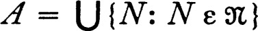. Each finite subset F of A is necessarily a subset of some member of
, and let 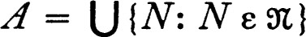. Each finite subset F of A is necessarily a subset of some member of  , for we may choose a finite subfamily of the nest
, for we may choose a finite subfamily of the nest  whose union contains F, and this finite subfamily has a largest member which then contains F. Consequently A ε
whose union contains F, and this finite subfamily has a largest member which then contains F. Consequently A ε  . Then
. Then  satisfies the hypothesis of (a) and therefore has a maximal member.
satisfies the hypothesis of (a) and therefore has a maximal member.
Proof of (d) : Suppose B is a chain in the partially ordered set A. Let  be the family of all chains in A which contain B. If
be the family of all chains in A which contain B. If  is a nest in
is a nest in  , then it can be directly verified that 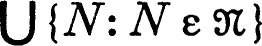 is again a member, so that
, then it can be directly verified that 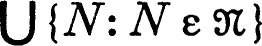 is again a member, so that  satisfies the hypothesis of (a) and consequently has a maximal member.
satisfies the hypothesis of (a) and consequently has a maximal member.
Proof of (e) : Choose an upper bound for a maximal chain.
Proof of (f): Recall that a function is a set of ordered pairs such that no two members have the same first coordinate. Let  be the family of all functions f such that the domain of f is a subset of A and f(a) ε Xa for each a in the domain of f. (The members of
be the family of all functions f such that the domain of f is a subset of A and f(a) ε Xa for each a in the domain of f. (The members of  are “fragments” of the function we seek.) The following argument shows that
are “fragments” of the function we seek.) The following argument shows that  is a family of finite character. If f is a member of
is a family of finite character. If f is a member of  , then every subset of f, and in particular every finite subset, is also a member of
, then every subset of f, and in particular every finite subset, is also a member of  . On the other hand, if f is a set, each finite subset of which belongs to
. On the other hand, if f is a set, each finite subset of which belongs to  , then the members of f are ordered pairs, no two different pairs have the same first coordinate, and consequently f is a function. Moreover, if a is a member of the domain of f, then {(a, f(a))} ε
, then the members of f are ordered pairs, no two different pairs have the same first coordinate, and consequently f is a function. Moreover, if a is a member of the domain of f, then {(a, f(a))} ε  and hence f(a) ε Xa, and it follows that 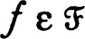. Because
and hence f(a) ε Xa, and it follows that 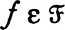. Because  is a family of finite character there is a maximal member c of
is a family of finite character there is a maximal member c of  , and it is only necessary to show that the domain of c is A. If a is a member of A which is not a member of the domain of c, then, since Xa is non-void, there is a member y of Xa and c ∪ {(a,y)} is itself a function and is a member of
, and it is only necessary to show that the domain of c is A. If a is a member of A which is not a member of the domain of c, then, since Xa is non-void, there is a member y of Xa and c ∪ {(a,y)} is itself a function and is a member of  , which contradicts the fact that c is maximal.
, which contradicts the fact that c is maximal.
Proof of (g): Apply the axiom of choice to the index set  with XA = A for each A in
with XA = A for each A in  .
.
Proof of (h) : Suppose that X is the (non-void) set which is to be well ordered. Let  be the family of all non-void subsets of X, and let c be a choice function for
be the family of all non-void subsets of X, and let c be a choice function for  ; that is, c is a function on
; that is, c is a function on  such that c(A) ε A for each A in
such that c(A) ε A for each A in  . The idea of the proof is to construct an ordering ≦ such that for each “initial segment” A the first point which follows A in the ordering is c(X ~ A). Explicitly, define a set A to be a segment relative to an order < iff each point which precedes a member of A is itself a member of A. In particular the void set is a segment. Let
. The idea of the proof is to construct an ordering ≦ such that for each “initial segment” A the first point which follows A in the ordering is c(X ~ A). Explicitly, define a set A to be a segment relative to an order < iff each point which precedes a member of A is itself a member of A. In particular the void set is a segment. Let  be the class of all reflexive linear orderings ≦ which satisfy the conditions: the domain D of ≦ is a subset of X and for each segment A other than D the first point of D ~ A is c(X ~ A). It is almost evident that each member of
be the class of all reflexive linear orderings ≦ which satisfy the conditions: the domain D of ≦ is a subset of X and for each segment A other than D the first point of D ~ A is c(X ~ A). It is almost evident that each member of  is a well ordering, for if B is a non-void subset of the domain of a member ≦ and A = {y: y ≦ x and y ≠ x for each x in B}, then c(X ~ A) is the first member of B. Suppose that ≦ and ≤ are members of
is a well ordering, for if B is a non-void subset of the domain of a member ≦ and A = {y: y ≦ x and y ≠ x for each x in B}, then c(X ~ A) is the first member of B. Suppose that ≦ and ≤ are members of  , that D is the domain of ≦, and that E is the domain of ≤. Let A be the set of all points x such that the sets {y : y ≦ x} and {y : y ≤ x) are identical and such that on these sets the two orderings agree. Then A is a segment relative to both ≦ and ≤. If A is not identical with either D or E, then c(X ~ A) is the first point of each of these sets which does not belong to A; but then c{X ~ A) ε A in view of the definition of A. It follows that A = D or A = E. Thus any two members of
, that D is the domain of ≦, and that E is the domain of ≤. Let A be the set of all points x such that the sets {y : y ≦ x} and {y : y ≤ x) are identical and such that on these sets the two orderings agree. Then A is a segment relative to both ≦ and ≤. If A is not identical with either D or E, then c(X ~ A) is the first point of each of these sets which does not belong to A; but then c{X ~ A) ε A in view of the definition of A. It follows that A = D or A = E. Thus any two members of  are related as follows: the domain of one member is a segment relative to the other, and the two orderings agree on this segment. Using this fact it is not hard to see that the union < of the members of
are related as follows: the domain of one member is a segment relative to the other, and the two orderings agree on this segment. Using this fact it is not hard to see that the union < of the members of  is itself a member of
is itself a member of  ; it is the largest member of
; it is the largest member of  . If F is the domain of <, then F = X, for otherwise the point c(X ~ F) may be adjoined at the end of the ordering (more precisely, < ∪ (F × {c(X) ~ F)} is a member of ε which properly contains <). The theorem follows. ∎
. If F is the domain of <, then F = X, for otherwise the point c(X ~ F) may be adjoined at the end of the ordering (more precisely, < ∪ (F × {c(X) ~ F)} is a member of ε which properly contains <). The theorem follows. ∎
26 Notes Each of the propositions listed above is actually equivalent to the Hausdorff maximal principle, and any one of these might reasonably be assumed as an axiom. In the appendix the maximal principle is derived from the axiom of choice.
The derivation of the well ordering principle from the choice axiom which is given above is essentially that of Zermelo [1]. A proof which uses 0.25(e) is also quite feasible. It may be noted that the union of a nest of well orderings is generally not a well ordering, so that a direct application of the maximal principle to the family of well orderings is impossible.
It should be remarked that the labelling of the various propositions in 0.25 is somewhat arbitrary. The Hausdorff maximal principle was used independently by C. Kuratowski, R. L. Moore, and M. Zorn in forms approximating those above.
Finally it may be noted that, although the formulation of Tukey’s lemma which is given is more or less standard, it does not imply (directly) the most commonly cited applications (for example, each group contains a maximal abelian subgroup). There is a more general form which states (very roughly): if a family  of sets is defined by a (possibly infinite) number of conditions such that each condition involves only finitely many points, then
of sets is defined by a (possibly infinite) number of conditions such that each condition involves only finitely many points, then  has a maximal member.
has a maximal member.
* This statement is not strictly accurate. There are technical reasons, expounded in the appendix, for distinguishing between two different sorts of aggregates. The term “set” will be reserved for classes which are themselves members of classes. This distinction is of no great importance here; with a single non-trivial exception, each class which occurs in the discussion (prior to the appendix) is also a set.
* An honest treatment of the problem is given in the appendix, where N. Wiener’s definition of ordered pair is used. The ingenious notion of representing relations in this fashion is due to C. S. Peirce. A very readable account of the elementary relation algebra will be found in A. Tarski [1].